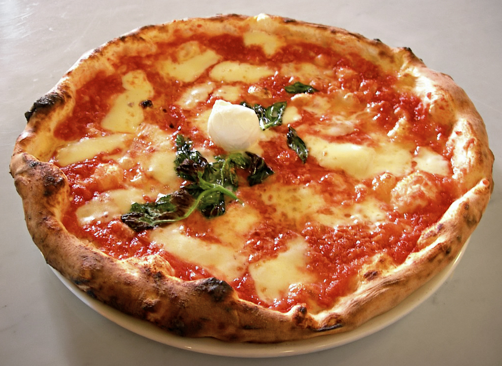

Making pizza
How to make pizza, a savoury dish of Italian origin, consisting of a usually round, flattened base of leavened wheat-based dough topped with various other ingredients, such as tomatoes and cheese.
Pizza has become one of the most popular foods in the world and a common fast food item in Europe and North America, available at pizzerias, restaurants offering Mediterranean cuisine, and via pizza delivery.
Ensure you have the following ingredients to hand before you begin.
- 300g strong bread flour
- 1 tsp instant yeast
- 1 tsp salt
- 1 tbsp olive oil olive oil, plus extra for drizzling
- 100ml passata
- Handful fresh basil Basil
- 1 garlic clove, crushed
- 125g ball mozzarella, sliced
- Handful grated or shaved parmesan
- Handful cherry tomatoes, halved 
-
Note:Make the base: Put the flour into a large bowl, then stir in the yeast and salt. Make a well, pour in 200ml warm water and the olive oil and bring together with a wooden spoon until you have a soft, fairly wet dough. Turn onto a lightly floured surface and knead for 5 mins until smooth. Cover with a tea towel and set aside. You can leave the dough to rise if you like, but it’s not essential for a thin crust.
- Make the sauce: Mix the passata, basil and crushed garlic together, then season to taste. Leave to stand at room temperature while you get on with shaping the base.
- Roll out the dough: If you’ve let the dough rise, give it a quick knead, then split into two balls. On a floured surface, roll out the dough into large rounds, about 25cm across, using a rolling pin. The dough needs to be very thin as it will rise in the oven. Lift the rounds onto two floured baking sheets.
- Top and bake: Heat oven to 240C/fan 220C /gas 8. Put another baking sheet or an upturned baking tray in the oven on the top shelf. Smooth sauce over bases with the back of a spoon. Scatter with cheese and tomatoes, drizzle with olive oil and season. Put one pizza, still on its baking sheet, on top of the preheated sheet or tray. Bake for 8-10 mins until crisp. Serve with a little more olive oil, and basil leaves if using.